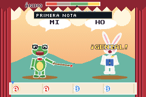
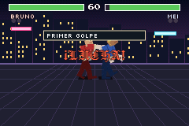
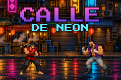
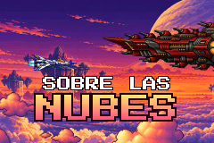
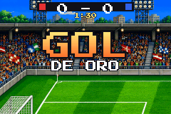

Exemple de pinyol
Recortes
Un joc de ritme de crida i resposta amb personatges de paper retallat, com els dels 32 bits: el mestre gripau canta una frase amb els botons i tu la repeteixes a temps. Els ninots són quads que es doblen com el paper, els decorats corren per les capes de la PPU i la música sona en directe a les veus del sintetitzador. I un menú que ensenya els trucs.
Les xifres
- Visites
- —
- Partides
- —
- Temps jugat
- —
- M'agrada
- —
- Comentaris
- —
- Al rànquing
- —
Les xifres s'actualitzen cada hora.
La fitxa
- Llicència
- codi MIT · art i so CC0
- El .zip
- 37 KB
Comentaris i vots
Vota amb una reacció (👍 ❤️ 🎉 🚀) i deixa el teu comentari amb el teu compte de GitHub. Els vots ordenen el rànquing i trien la portada de la setmana.
Els comentaris i els vots arriben molt aviat.
Es carreguen des de giscus.app, amb els comentaris desats a GitHub, només quan els demanes.
Més jocs



